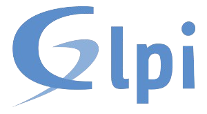
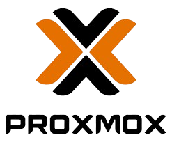
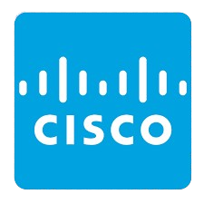
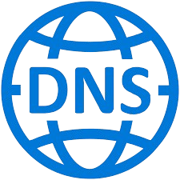
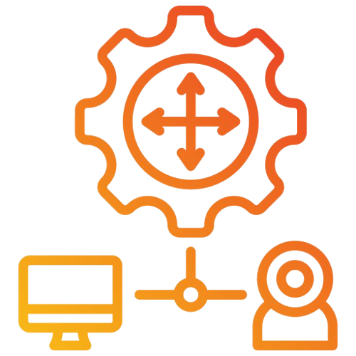

À propos de moi
De l'assistance technique sur le terrain à la mise en place d'architectures réseau avancées, mon parcours s'inscrit dans une volonté constante de résoudre des problématiques concrètes et de garantir la sécurité des systèmes d'information.
CPAM des Bouches-du-Rhône
La Caisse Primaire d'Assurance Maladie des Bouches-du-Rhône est un organisme public de sécurité sociale qui assure la gestion de la santé de plusieurs millions d'assurés en région PACA. J'intègre le service informatique support utilisateurs, chargé d'assurer la continuité du parc sur l'ensemble des sites et agences du département.
Mes formations
Lycée La Salle – Avignon
Diplôme obtenu en 2024Bac Pro SN (Option RISC) — Réseaux Informatiques et Systèmes Communicants. Bases de l'électronique, câblage et configuration de switchs/routeurs.
Campus CCI – Vaucluse
En cours — 2024 à 2026BTS SIO (Option SISR) — Solutions d'Infrastructure, Systèmes et Réseaux. Administration réseau approfondie, Windows/Linux Server et cybersécurité.
Mes expériences
U Proximité France – Le Mistral
28 fév. – 11 mars 2022Stage 1 : développement d'un jeu simple en programmation avec le logiciel interne de l'entreprise.
U Proximité France – Le Mistral
7 juin – 1er juil. 2022Stage 2 : assistance utilisateurs sur problèmes PC et câble management pour baies réseau.
NGE
16 jan. – 10 fév. 2023Stage 3 : correction de bugs sur un site de référencement de factures CSV et réparation d'un découpeur PDF.
NGE
9 mai – 2 juin 2023Stage 4 : développement d'un découpeur de fichiers CSV à partir du découpeur PDF existant.
Socopa Viandes
27 nov. – 22 déc. 2023Stage 5 : création d'un outil de documentation du réseau informatique pour faciliter la formation des équipes maintenance.
Socopa Viandes
25 mars – 19 avr. 2024Stage 6 : remplacement d'un cœur de réseau en panne et déploiement de bornes Wi-Fi en zone de production.
CPAM – Marseille
8 nov. 2024 – 30 août 2026Alternance technicien support : support utilisateurs, préparation et déploiement de postes, résolution d'incidents N1.
Compétences techniques
Support & services informatiques

Windows Server
Administration de Windows Server 2016 / 2019 en environnement de formation et de test.
Windows 10 & 11
Installation, configuration, gestion des comptes utilisateurs et dépannage.

Linux
Utilisation de Debian et Ubuntu en environnement virtuel et de laboratoire.

Active Directory
Création de comptes, groupes, GPO et gestion d'un domaine Windows.

GLPI
Gestion de tickets, inventaire et suivi du parc informatique.
Systèmes et réseaux

Proxmox
Virtualisation et gestion de machines virtuelles dans un environnement de test.

Cisco
Configuration de base des équipements réseau en environnement pédagogique.

VirtualBox
Création et utilisation de machines virtuelles pour les tests systèmes et réseau.

DNS
Compréhension et mise en place du service de résolution de noms.

DHCP
Configuration du service d'attribution automatique d'adresses IP.